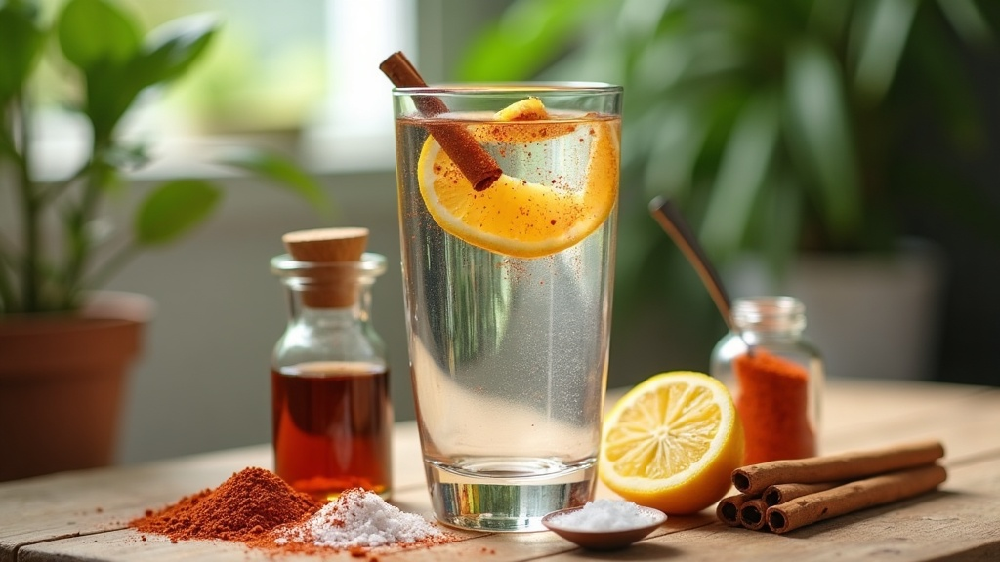

Lose the kilos.
And keep them off.
This is not a diet, and it is definitely not one of Marten's witchcraft green power-juices. 😅 It is how you lose weight the healthy way and actually keep it off. The main thing is a shift in mindset, backed by a few simple systems and little tricks you will actually stick to. You keep your real Basque food, just with a few small adjustments, and bring in some newer, lighter, healthier recipes alongside it. No starving, and you learn to smile at a craving instead of obeying it. Because this was never about short-term kilos or another diet. It is about the mental strength to become the person you want to be, with the body you want, and to stay that way, not change for a week and slip back into your old habits.
Perded los kilos.
Y que no vuelvan.
Esto no es una dieta, y desde luego no es uno de los zumos verdes de brujería de Marten. 😅 Es la forma de adelgazar de manera sana y mantenerlo de verdad. Lo principal es un cambio de mentalidad, apoyado en unos cuantos sistemas sencillos y pequeños trucos que de verdad vais a mantener. Seguís con vuestra comida vasca de verdad, solo con unos pequeños ajustes, y sumáis algunas recetas más nuevas, ligeras y saludables. Sin pasar hambre, y aprendéis a sonreírle a un antojo en vez de obedecerlo. Porque esto nunca fue cuestión de kilos para un verano ni de otra dieta más. Es cuestión de la fuerza mental para convertiros en la persona que queréis ser, con el cuerpo que queréis, y quedaros ahí, no cambiar una semana y recaer en las viejas costumbres.
You have tried before. I get it.
In a minute I will tell you a little story about a whisky cheesecake in a Chinese restaurant, and five words in Spanish you will be itching to use. But before that story, something important.
Hey Guillermo and Pilar. I know exactly what you are probably thinking right now: "Madre mía, this is a lot of reading. I just want the solution, the quick fix. I don't want to study a whole book." Fair enough.
So here is how easy I make it: you do not even have to read it. Your hands have lifted enough for this week. For once, let your ears do the work. Press play and let a real Spanish voice read the whole thing to you, out loud. Take your time, brick by brick. Best of all on the sofa next to Pilar (your partner in crime, and the cook who keeps you fed like a king, which is exactly why this is a team sport 😄), half an hour at most. That is all it takes.
And Pilar, this is every bit as much for you. You are the heart of this kitchen, a true maestra of Spanish and Basque cooking, making sure your man never sits down to a cold plate after a hard day. That is love. It also makes you two a team, because Guillermo can be strong as an ox all day, then walk in, see your famous ali-oli smiling up at him at 800 calories a spoon, and the whole fight starts over. 😄 (More on taming that mayonnaise in the extra tips.)
Probably you have tried to lose weight before. Probably more than once. Maybe you held on for a few days, a few weeks, even a few months, lost a couple of kilos and felt great, and then life got busy and the old habits crept back in. Sometimes it is simply hard to stick to the rules.
And maybe you are still not happy with where you are. That is exactly why this guide exists. You are not starting over, you are starting wiser.
So, that is why the question is this:
"Will you give 25 minutes, just once, to change how you live for the next 30 years?" 🔥
This is not about following yet another strict food system with a long list of rules you can barely wait to escape. You know the scene: late at night, comfy on the sofa, watching your favourite show and staring down your favourite sweet like it owes you money, your brain working overtime to build the perfect legal case for why you simply have to eat it tonight. 😄
Because that is the trap: you grit your teeth, you drop a few kilos, you go back to the old way, you gain it all back, and round and round you go. Lose, gain, lose, gain. Exhausting, and it never ends.
I am not putting you through that. I am after something completely different: the moment it clicks. When you finally understand why, a switch flips inside you and it stays flipped. It is not a diet you survive. It is who you become.
This is the difference between losing weight for one summer, and changing for the rest of your life.
Ya lo habéis intentado antes. Lo entiendo.
Dentro de un momento os contaré una pequeña historia sobre una tarta de queso al whisky en un restaurante chino, y cinco palabras que os vais a morir de ganas de usar. Pero antes de esa historia, algo importante.
Hola Guillermo y Pilar. Sé perfectamente lo que estaréis pensando ahora mismo: «Madre mía, cuánto para leer. Yo solo quiero la solución, el remedio rápido. No me apetece estudiarme un libro entero». Me parece justo.
Así que mirad qué fácil os lo pongo: ni siquiera tenéis que leerlo. Las manos ya han levantado bastante por esta semana. Por una vez, que trabajen los oídos. Dadle al play y dejad que una voz española de verdad os lo lea todo, en voz alta. Con calma, ladrillo a ladrillo. Mejor aún en el sofá, al lado de Pilar (tu cómplice, y la cocinera que te tiene como a un rey, que es justo por lo que esto es deporte de equipo 😄), media hora como mucho. Eso es todo lo que hace falta.
Y Pilar, esto es igual de tuyo. Tú eres el corazón de esta cocina, una auténtica maestra de la cocina española y vasca, la que se asegura de que tu hombre siempre tenga un plato caliente después de un día duro. Eso es amor. Y también os convierte en un equipo, porque Guillermo puede estar fuerte como un toro todo el día, llegar a casa, ver tu famoso ali-oli sonriéndole desde la mesa con 800 calorías por cucharada, y vuelta a empezar la batalla. 😄 (Más sobre cómo domar esa mayonesa en los consejos extra.)
Seguramente ya habéis intentado adelgazar antes. Seguramente más de una vez. A lo mejor aguantasteis unos días, unas semanas, incluso unos meses, perdisteis un par de kilos y os sentíais genial, y entonces la vida se complicó y las viejas costumbres se colaron de nuevo. A veces, sencillamente, cuesta seguir las normas.
Y puede que todavía no estéis a gusto con donde estáis. Justo por eso existe esta guía. No empezáis de cero, empezáis con más cabeza.
Así que la pregunta es esta:
«¿Vais a dedicar 25 minutos, una sola vez, para cambiar cómo vais a vivir los próximos 30 años?» 🔥
No se trata de seguir otra dieta estricta más, con una lista de normas de las que no veis la hora de escapar. Ya conocéis la escena: tarde por la noche, a gustito en el sofá, viendo vuestra serie favorita y mirando fijamente vuestro dulce favorito como si os debiera dinero, con el cerebro a tope buscando el argumento perfecto para justificar por qué hay que comérselo esta noche sí o sí. 😄
Porque esa es la trampa: apretáis los dientes, perdéis unos kilos, volvéis a las andadas, lo recuperáis todo, y vuelta a empezar. Perder, ganar, perder, ganar. Agotador, y no se acaba nunca.
No os voy a hacer pasar por eso. Voy detrás de algo completamente distinto: el momento en que hace clic. Cuando por fin entendéis el porqué, algo se enciende dentro de vosotros y se queda encendido. No es una dieta que aguantar. Es la persona en la que os convertís.
Esta es la diferencia entre perder peso para un verano, y cambiar para el resto de vuestra vida.
Who is the captain of your ship? 🚢
You are going to be tested, more often than you would like, and you knew that before you even opened this. How it ends comes down to one question.
Will you be weaker than your cravings, or stronger than your impulses? And on the days you lose that fight, it is almost always one of two things: no system was ready in your pocket, or your WHY was too weak.
Right now, when a craving shows up, your body snaps its fingers, and you obey. The body is steering the ship, and you, the captain, have quietly let go of the wheel. You are going to take that wheel back. Because a craving is just an impulse. It has no power of its own. The only one with real power here is you. And here is the part that changes everything: the day you truly become stronger than your impulses, you are not just winning one craving, you are winning all of them. The way you eat, the way you carry yourself, the way you look at the person in the mirror, it all shifts. Win that one fight inside your head, and you have already won the whole thing.
So picture this. You are out for dinner at the Chinese restaurant, the one you love, and a gorgeous little whisky cheesecake is sitting on the table, batting its eyes at you. You look it dead in the eye, you smile, and you tell it: "Vete a tu puta casa" 😄. Go home, you are not invited tonight. And when the bill comes and you never even ordered it, you sit back, grin, and say: "See? I won. Because I am stronger than you."
Your body just has to be retrained, reconditioned, like a muscle in the gym. That takes two things money cannot buy: self-discipline and self-control. The good news: like any muscle, it gets stronger every single time you use it, and the cravings get quieter.
"Will you be weaker than your cravings, or stronger than your impulses? That is the only real question."
¿Quién es el capitán de vuestro barco? 🚢
Os van a poner a prueba, más veces de las que os gustaría, y eso ya lo sabíais antes de abrir esto. Cómo acaba la historia depende de una sola pregunta.
¿Vais a ser más débiles que vuestros antojos, o más fuertes que vuestros impulsos? Y los días que perdáis esa batalla, casi siempre es por una de dos cosas: no teníais ningún sistema preparado en el bolsillo, o vuestro PORQUÉ era demasiado débil.
Ahora mismo, cuando aparece un antojo, el cuerpo ladra una orden y vosotros obedecéis. El cuerpo lleva el barco, y vosotros, el capitán, habéis soltado el timón sin daros cuenta. Vais a recuperar ese timón. Porque un antojo es solo un impulso. No tiene ningún poder propio. El único que tiene poder de verdad aquí sois vosotros. Y aquí está lo que lo cambia todo: el día en que de verdad os hacéis más fuertes que vuestros impulsos, no estáis ganando un solo antojo, los estáis ganando todos. Cómo coméis, cómo os movéis, cómo miráis a la persona del espejo: todo se mueve con vosotros. Ganad esa batalla dentro de vuestra cabeza, y ya lo habéis ganado todo.
Imaginaos la escena. Estáis cenando en el restaurante chino, ese que tanto os gusta, y una preciosa tarta de queso al whisky descansa sobre la mesa, haciéndoos ojitos. La miráis fijamente, sonreís y le decís: «Vete a tu puta casa» 😄. A casa, que esta noche no estás invitada. Y cuando llega la cuenta y ni siquiera la habéis pedido, os recostáis, sonreís y decís: «¿Ves? He ganado. Porque soy más fuerte que tú».
Al cuerpo solo hay que reeducarlo, reacondicionarlo, como un músculo en el gimnasio. Eso requiere dos cosas que el dinero no puede comprar: autodisciplina y autocontrol. La buena noticia: como cualquier músculo, se hace más fuerte cada vez que lo usáis, y los antojos se van callando.
«¿Seréis más débiles que vuestros antojos, o más fuertes que vuestros impulsos? Esa es la única pregunta que importa.»
Does this sound familiar? 🗣️
I am no mind reader. But I would happily bet a good bottle of Rioja that a few of these little voices have visited you on a hard day. 😄 Have a read, have a laugh, nod along. Then it is time to work on them.
Notice how clever your mind gets in the weak moments, how it finds the most irresistible argument exactly when you are tired. That is not bad luck. We decide with emotion first and dress it up with reason afterwards. So it will whisper any excuse not to start the 45 days, not to make the small changes, and every time it sounds so fair: "It is fine, you had a hard day, nobody can be strong all the time." Now and then that is true, and that is okay. But when the excuse becomes the habit, when that little voice wins night after night, that is your signal. That is the moment to wake up.
¿Esto te suena? 🗣️
No soy adivino. Pero me jugaría una buena botella de Rioja a que alguna de estas vocecillas os ha visitado en un día difícil. 😄 Leedlas, reíos, asentid con la cabeza. Y luego toca ponerse a trabajarlas.
Fijaos en lo listo que se vuelve vuestro cerebro en los momentos débiles, cómo encuentra el argumento más irresistible justo cuando estáis cansados. No es mala suerte. Primero decidimos con la emoción y luego lo vestimos con la razón. Así que os susurrará cualquier excusa para no empezar los 45 días, para no hacer los pequeños cambios, y siempre suena tan justo: «No pasa nada, has tenido un día duro, nadie puede ser fuerte siempre.» De vez en cuando es verdad, y no pasa nada. Pero cuando la excusa se vuelve costumbre, cuando esa vocecilla gana noche tras noche, esa es vuestra señal. Ese es el momento de despertar.
Willpower vs. Systems 🧰
Your flesh vs. your spirit. 😇 There is an old line in the Bible: "the spirit is willing, but the flesh is weak." It is spot on. Your flesh (the body) is the drama queen that whines for dessert, begs for the late-night snack, and wants everything right now. Your spirit (the real you) is the one who decides who you want to become. The flesh is loud, but the spirit is the boss. This whole guide is really just one thing: getting your spirit fit enough to put the flesh back in its seat.
"Willpower is a small bucket of water. By the evening it is usually empty."
Every time you say no, you pour a little more out. And right when it runs dry, the whole kitchen wakes up, and temptation with it.
It starts as a whisper from the fridge: "Guillermo... Guillermooo..." Then the biscuits chime in from the cupboard: "Pilar... Pilaaar..." and soon the whole kitchen is one big choir. But that is not the kitchen singing. It is your flesh, that same drama queen, throwing a tantrum for its dessert. 😄
And those two at least have the decency to stay hidden. That big bowl of sweets parked right in front of the TV does not even bother to whisper, it just sits there in plain sight, smiling at you all evening. 😄
That is why systems over willpower matter so much.
The people who make it are not stronger than you. They simply built systems, so willpower never has to save the day.
Inside you there is a stronger version and a weaker version of yourself, and both are real. Every time you keep your word, the strong one grows. Every time you break it, the weak one grows instead. So which one do you want to feed? You grow the strong one with this guide: by listening to the audio again and again, and coming back to it whenever you wobble, you slowly let your own mind change.
You know the saying, "you can't teach an old dog new tricks." Now, I am not calling anyone old here, please do not punch me. 😄 I am only saying that a mind which has already lived forty or fifty good years has its grooves cut a little deeper, so it takes a touch more patience to reroute. That is exactly why consistency wins, and why this is built as an audiobook and a guided system you can come back to any time you need a nudge back on track. And you never have to fight that alone. That is all a system is: a little trick waiting in your pocket, so the right choice is half made before the craving even shows up.
And here is the part that changes everything: a craving is a wave, not a wall. It rises, it peaks, and if you do not feed it, it breaks and rolls away, usually in a few minutes. Like the waves at Mundaka, it always looks bigger from the shore than it really is. You do not have to beat it. You just have to outlast it.

And you will have them, make no mistake. Your brain, which you trained for years, screams that the body needs to eat something right now or the world is going to end, and the old drama queen, that weak flesh, takes the stage all over again. You win that round the same way every time: you ride the wave out, and you get back up, again and again. There is much more on this on the Power Page, and this is exactly what the audio is for: in the car, on the sofa, give it one or two minutes and you are back on track.
"It is not about willpower. It is about the system you have ready when temptation shows up."
Fuerza de voluntad vs. sistemas 🧰
Vuestra carne contra vuestro espíritu. 😇 Hay una frase antigua en la Biblia: «el espíritu está dispuesto, pero la carne es débil.» Da en el clavo. Vuestra carne (el cuerpo) es la reina del drama que lloriquea por el postre, suplica el picoteo de medianoche y lo quiere todo ya. Vuestro espíritu (el vosotros de verdad) es quien decide en quién os queréis convertir. La carne grita, pero el espíritu manda. Toda esta guía es en realidad una sola cosa: poner a vuestro espíritu en forma para que devuelva a la carne a su sitio.
«La fuerza de voluntad es un cubo pequeño de agua. Para la noche suele estar vacío.»
Cada vez que decís que no, vertéis un poco más. Y justo cuando se queda seco, toda la cocina se despierta, y con ella la tentación.
Empieza como un susurro desde la nevera: «Guillermo... Guillermooo...» Luego se suman las galletas desde el armario: «Pilar... Pilaaar...» y enseguida toda la cocina es un gran coro. Pero no es la cocina la que canta. Es vuestra carne, esa misma reina del drama, montando una pataleta por su postre. 😄
Y esos al menos tienen la decencia de quedarse escondidos. Ese cuenco enorme de dulces aparcado justo delante de la tele ni siquiera se molesta en susurrar, se queda ahí a la vista, sonriéndoos toda la tarde. 😄
Por eso importan tanto los sistemas por encima de la fuerza de voluntad.
Los que lo consiguen no son más fuertes que vosotros. Simplemente construyeron sistemas, para que la fuerza de voluntad no tenga que salvar el día.
Dentro de vosotros hay una versión más fuerte y una más débil, y las dos son reales. Cada vez que cumplís vuestra palabra, crece la fuerte. Cada vez que la rompéis, crece la débil. Entonces, ¿a cuál queréis alimentar? A la fuerte la hacéis crecer con esta guía: escuchando el audio una y otra vez, y volviendo a ella cada vez que flaqueáis, dejáis poco a poco que vuestra mente cambie.
Ya conocéis el dicho: «loro viejo no aprende a hablar.» Ojo, que no estoy llamando viejo a nadie, no me peguéis. 😄 Solo digo que una mente que ya ha vivido cuarenta o cincuenta buenos años tiene los surcos un poco más marcados, así que cuesta algo más de paciencia redirigirla. Justo por eso gana la constancia, y por eso esto está hecho como un audiolibro y un sistema guiado al que podéis volver siempre que necesitéis un empujón para retomar el rumbo. Y eso no lo tenéis que pelear solos. Eso es todo lo que es un sistema: un pequeño truco esperando en el bolsillo, para que la decisión correcta esté medio tomada antes incluso de que aparezca el antojo.
Y aquí está lo que lo cambia todo: un antojo es una ola, no un muro. Sube, llega a su punto más alto y, si no lo alimentáis, rompe y se aleja, normalmente en unos minutos. Como las olas de Mundaka, siempre parece más grande desde la orilla de lo que en realidad es. No tenéis que vencerlo. Solo tenéis que aguantar más que él.
Y los vais a tener, no os engañéis. Vuestro cerebro, que habéis entrenado durante años, grita que el cuerpo necesita comer algo ahora mismo o se acaba el mundo, y la vieja reina del drama, esa carne débil, vuelve a salir a escena. Esa batalla se gana siempre igual: aguantáis la ola y os volvéis a levantar, una y otra vez. Hay mucho más sobre esto en la Página de Poder, y justo para eso está el audio: en el coche, en el sofá, dadle uno o dos minutos y volvéis al rumbo.
«No va de fuerza de voluntad. Va del sistema que tenéis listo cuando aparece la tentación.»
The Magic ✨
The magic you are looking for is in the thing you are trying to avoid.
So what are you avoiding? Hunger. You eat all day, and the second your stomach whispers, you rush to shut it up with a snack. But that little hunger is not the enemy. It is the door. The real change starts when your body relearns something it has forgotten: how to pull its energy from what it is already carrying.
Because your body runs on two fuels: the food you just ate, and the fat you are carrying around. (That is the fat we all carry, not a personal attack. Lower the hammer, Guillermo, I would never, I have seen your arms. So let us peacefully continue.) Feed it every couple of hours and it turns lazy and never touches the reserves. Let a little normal hunger back in, and it remembers how to burn its own fat. That is the whole trick.
And it is not new. Your ancestors did not roll out of the cave to a full plate. They hunted the mammoth on an empty stomach and ate after the work was done. A body running on empty for a few hours is not an emergency, it is how we were built. And that famous line, that breakfast is "the most important meal of the day", was never science. It was a cereal advertising slogan, pushed since the early 1900s to sell more cornflakes.
And here is the heart of it: this is not about food. Not rules, not another diet. It is a deep shift in the way your mind works and a change in your lifestyle. That is the foundation. Build it on sand and no recipe, no diet, nothing on earth will hold. Get the mind right, and the food takes care of itself.
La Magia ✨
La magia que buscáis está justo en aquello que intentáis evitar.
¿Y qué intentáis evitar? El hambre. Coméis todo el día, y en cuanto el estómago susurra, corréis a callarlo con un picoteo. Pero ese poquito de hambre no es el enemigo. Es la puerta. El cambio de verdad empieza cuando vuestro cuerpo vuelve a aprender algo que había olvidado: cómo sacar su energía de lo que ya lleva encima.
Porque vuestro cuerpo funciona con dos combustibles: la comida que acabáis de comer, y la grasa que lleváis encima. (Es la grasa que todos llevamos, no es un ataque personal. Baja el martillo, Guillermo, yo jamás, que te he visto los brazos. Sigamos en paz.) Dadle de comer cada dos horas y se vuelve vago y no toca nunca las reservas. Dejad entrar un poco de hambre normal, y recuerda cómo quemar su propia grasa. Ese es todo el truco.
Y no es nada nuevo. Vuestros antepasados no salían de la cueva a un plato lleno. Cazaban el mamut con el estómago vacío y comían después de hacer el trabajo. Un cuerpo funcionando en vacío unas horas no es una emergencia, es como nos hicieron. Y esa famosa frase, que el desayuno es «la comida más importante del día», nunca fue ciencia. Fue un eslogan publicitario de los cereales, repetido desde principios del siglo XX para vender más copos de maíz.
Y aquí está el meollo: esto no va de comida. Ni de normas, ni de otra dieta. Es un cambio profundo en cómo funciona vuestra mente y un cambio en vuestro estilo de vida. Ese es el fundamento. Construidlo sobre arena y no habrá receta, dieta ni nada en el mundo que aguante. Poned la mente en su sitio, y la comida se resuelve sola.
Your Big WHY ❤️
Please do not skip this one. Everything else stands on it.
"Without a strong why, no plan survives a bad evening."
Willpower is a muscle. You can train it, but some days the tank is just empty, and willpower alone will not carry you. So here is the real question: what do you lean on when it is gone? That is your why. Willpower runs out. A real reason refuels itself.
So get it clear right now. Why do you really want to lose weight? What gives you strength?
- Is it your health: simply wanting to be fit, and to feel fit again?
- Is it the man, or the woman, you want to see in the mirror again?
- Is it the extra years with your family, and with grandchildren who are not even born yet (relax, that part is not tonight's homework 😊)?
Whatever it is, find it. Because in the weak moments, and everyone has them, this is the thing you reach for. This is what gives you strength when the willpower is gone.
"The why is the engine. Everything else is just steering."
Vuestro gran PORQUÉ ❤️
Por favor, no os saltéis esta. Todo lo demás se apoya en ella.
«Sin un porqué fuerte, ningún plan sobrevive a una mala noche.»
La fuerza de voluntad es un músculo. La podéis entrenar, pero hay días en que el depósito está simplemente vacío, y la fuerza de voluntad sola no os va a llevar. Así que la verdadera pregunta es esta: ¿en qué os apoyáis cuando ya no está? Eso es vuestro porqué. La fuerza de voluntad se agota. Una razón de verdad se recarga sola.
Así que tenedlo claro ahora mismo. ¿Por qué queréis adelgazar de verdad? ¿Qué os da fuerza?
- ¿Es vuestra salud: simplemente querer estar en forma y sentiros en forma otra vez?
- ¿Es el hombre, o la mujer, que queréis volver a ver en el espejo?
- ¿Son los años de más con vuestra familia, y con esos nietos que ni siquiera han nacido todavía (tranquilos, esa parte no es deber para esta noche 😊)?
Sea lo que sea, encontradlo. Porque en los momentos débiles, y todos los tenemos, es a esto a lo que os agarráis. Esto es lo que os da fuerza cuando ya no os queda fuerza de voluntad.
⬇️ Descargad la hoja «Mi Porqué»
«El porqué es el motor. Todo lo demás es solo el volante.»
Insanity 🔁
I know what you are thinking: I do not want to do this right now, I will do it tomorrow. The urge to skip it is completely normal. But you would not be reading this if you did not really want to change, so stay with me for one more minute.
"Insanity is doing the same thing over and over again and expecting a different result."
That was Albert Einstein. And before Pilar reaches for the frying pan: no, I am not calling anyone crazy. We have all done it, me first. 😊 I am only saying that without a real change, and without a big why holding it up, the odds of sliding back into the same old patterns, again and again, are very high.
The why exercise plants a seed. You picture the future version of yourself, you see it, you read it. You will not do it perfectly every day, and that is fine. But a seed only grows once it breaks open: it cannot stay a seed and become a plant at the same time. So ask yourself the real question: what part of you, the part still holding you back, needs to break open so the new you can start to grow?
"You cannot stay the seed and become the tree. Something has to break open."
La Locura 🔁
Ya sé lo que estáis pensando: no quiero hacer esto ahora mismo, ya lo haré mañana. Las ganas de saltároslo son completamente normales. Pero no estaríais leyendo esto si no quisierais cambiar de verdad, así que quedaos conmigo un minuto más.
«La locura es hacer lo mismo una y otra vez y esperar un resultado diferente.»
Eso lo dijo Albert Einstein. Y antes de que Pilar coja la sartén: no, no estoy llamando loco a nadie. Todos lo hemos hecho, yo el primero. 😊 Solo digo que sin un cambio de verdad, y sin un gran porqué que lo sostenga, las probabilidades de recaer en los mismos viejos patrones, una y otra vez, son muy altas.
El ejercicio del porqué planta una semilla. Os imagináis la versión futura de vosotros mismos, la veis, la leéis. No lo haréis perfecto cada día, y no pasa nada. Pero una semilla solo crece cuando se rompe: no puede seguir siendo semilla y convertirse en planta al mismo tiempo. Así que haceos la pregunta de verdad: ¿qué parte de vosotros, esa que todavía os frena, tiene que romperse para que la nueva versión empiece a crecer?
«No podéis seguir siendo la semilla y ser el árbol. Algo tiene que romperse.»
You will slip. That is not the question 🌅
One thing is almost certainly going to happen: you are going to slip. There will be a Snickers, a handful of sweets, a long dinner out, a day the numbers go the wrong way, a week you fall off completely. That is not failure. That is being a human being.
The whole game was never "never slip." It is one question, and only one: how fast do you get back up? The person who reaches a healthy weight and keeps it is not the one who never falls. It is the one who falls, shrugs, and gets back on the road at the very next meal. Not Monday. Not next month. The next meal, or the next day.
After everything on these pages, here is what matters most: do not try to do all of it at once. I gave you a lot, on purpose, so you would have plenty to choose from. But if you try to change everything tomorrow, you will probably only last a week. Instead:
- Start small. Pick two or three things from this guide that genuinely feel doable for you. Write them down. Those are your starting habits.
- Live them until they are easy. When a habit stops feeling like effort and starts feeling normal, that is your signal you are ready for more.
- Then add the next one. One at a time, the way you stack stones into a wall. Slowly, without drama, it becomes who you are.
"You do not have to be perfect. You just have to keep coming back." 💚
"It is not how hard you fall. It is how you get back up. Every single time."
Vais a caer. Esa no es la pregunta 🌅
Una cosa va a pasar casi seguro: vais a caer. Habrá un Snickers, un puñado de dulces, una cena larga fuera, un día en que los números van al revés, una semana en la que lo dejáis del todo. Eso no es fracasar. Eso es ser humano.
El juego nunca fue «no caer nunca». Es una sola pregunta, y solo una: ¿cuánto tardáis en levantaros? Quien llega a un peso sano y lo mantiene no es el que nunca cae. Es el que cae, se encoge de hombros y vuelve al camino en la siguiente comida. No el lunes. No el mes que viene. La siguiente comida, o el día siguiente.
Después de todo lo que hay en estas páginas, lo más importante es esto: no intentéis hacerlo todo a la vez. Os he dado mucho, a propósito, para que tengáis de dónde elegir. Pero si intentáis cambiarlo todo mañana, probablemente solo duraréis una semana. En vez de eso:
- Empezad pequeño. Elegid dos o tres cosas de esta guía que de verdad veáis posibles. Apuntadlas. Esos son vuestros hábitos de partida.
- Vividlos hasta que sean fáciles. Cuando un hábito deja de costar y empieza a sentirse normal, esa es la señal de que estáis listos para más.
- Entonces añadid el siguiente. De uno en uno, como quien apila piedras en un muro. Poco a poco, sin dramas, se convierte en quienes sois.
«No tenéis que ser perfectos. Solo tenéis que seguir volviendo.» 💚
«No importa lo fuerte que caigáis. Importa cómo os levantáis. Cada vez.»
Your honest check-in ✅
No judgement, and no one sees this but you. It is just a quick snapshot of where the easy wins are hiding. Answer fast and from the gut. Every yes is not a failure, it is a lever you can actually move.
Vuestro chequeo honesto ✅
Sin juzgar, y nadie ve esto salvo vosotros. Es solo una foto rápida de dónde se esconden las victorias fáciles. Responded rápido y a bote pronto. Cada sí no es un fracaso, es una palanca que de verdad podéis mover.
Calories In, Calories Out ⚖️
Of everything on these pages, this is the simplest, and the one you have heard a thousand times: calories in, calories out. You do not need to master the science. You need two small things: a rough sense of your own base need, and the habit of turning the packet over and reading the back before it lands in the trolley. No stress, no obsessing, just a glance. I promise you will be surprised how much sugar and fat hide in there, and how fast one little snack hands back the 400 calories you just earned on a 7,000 step walk, so the whole effort was for nothing. That is exactly what the calculator below is for.
Calories IN is the food and drink you take in. Calories OUT is everything your body burns just living, working and moving. Tip the balance, and over time your weight quietly follows.
Eat more than you burn, and you gain.
Everything else is detail.
It is a solid estimate, not a lab reading. It starts from your body's resting burn (from your weight, height, age and sex, the standard Mifflin-St Jeor formula), times how active your day is, plus any extra walking. The honest part: the scale is the real test. Pick a number, eat to it for 2 to 3 weeks and watch. Losing too fast? Eat a little more. Nothing moving? Trim a little, or add steps. Your body shows you the exact number over time.
Method: Mifflin-St Jeor (1990) plus an activity factor, the same approach dietitians use. About 7,700 kcal of food equals 1 kg of body fat, and roughly 40 kcal per 1,000 steps walked.
The calculator works out your numbers right here on the screen. The sheet downloads blank, so write your name and those numbers on it by hand. Do one for each of you.La calculadora saca vuestros números aquí mismo en la pantalla. La hoja se descarga en blanco, así que escribid a mano vuestro nombre y esos números. Haced una para cada uno.
Think of your body like a wood stove. The food you eat is the wood you feed in. The fire is your body burning it all day. Feed it a little less than it burns, and it reaches into the woodpile you already carry, your fat, to cover the gap. A small daily gap of about 500 kcal melts roughly half a kilo of fat a week. Steady, and easy to keep. A body doing hard physical work burns a lot, so you do not need to starve, just stay a little under.
"If you only feed your body from the outside, it never learns to burn the fuel it is already carrying."
Move Your Body 🏃
Food gets all the attention, but movement is the other half of this, and it is just as much a head game as the plate is. You do not move to earn your dinner. You move because a body that moves stays strong, clear and alive. The old rule is blunt and true: if you do not use it, you lose it.
And like the food, it is mostly mental. A walk clears the head, drains the stress that drives the evening snacking, and reminds you who is the captain. You do not need to become an athlete. You need to start, and keep it stupidly simple.
🚶 Start with walks
The easiest win there is. About 7,000 steps is roughly a 45 minute walk at a normal pace: out toward Durango to the edge of the woods and back, or one loop through the park. Two or three times a week, plus the stairs instead of the elevator. It is surprising how fast the body answers.
⏱️ Add a 15 minute workout
Forget the gym mountain: the membership, the drive, the hour and a half, the shower. That whole pile kills your motivation before you even start. You do not need any fancy kit either. Barre (big in Spain right now), a bit of bodyweight, a band or some light weights, whatever you enjoy, and it works just as well for women as for men. Put on a standard YouTube workout and let the trainers pull you through 15 minutes, two or three times a week. A short, effective little session burns real extra calories, and the best part is how much better you feel afterwards.
Put that together with the eating tips in here and you do not need some miserable crash diet. You keep your life, your table, Pilar's cooking, with a few honest adjustments like less oil. Movement is the part that buys you the years: the mobility, the joints, staying strong and independent when you are old. That is the real prize.
"I do not move to punish my body. I move because I plan on using it for a long time."
Mover el Cuerpo 🏃
Toda la atención va a la comida, pero el movimiento es la otra mitad de esto, y es tanto un juego de cabeza como el plato. No os movéis para ganaros la cena. Os movéis porque un cuerpo que se mueve se mantiene fuerte, despierto y vivo. La vieja regla es directa y cierta: si no lo usáis, lo perdéis.
Y como con la comida, es sobre todo mental. Un paseo despeja la cabeza, descarga el estrés que dispara el picoteo de la noche, y os recuerda quién es el capitán. No hace falta volverse atleta. Hace falta empezar, y mantenerlo absurdamente simple.
🚶 Empezad con paseos
La victoria más fácil que hay. Unos 7.000 pasos son más o menos un paseo de 45 minutos a ritmo normal: hacia Durango hasta el borde del bosque y vuelta, o una vuelta por el parque. Dos o tres veces por semana, más las escaleras en vez del ascensor. Sorprende lo rápido que responde el cuerpo.
⏱️ Añadid un entreno de 15 minutos
Olvidaos de la montaña del gimnasio: la cuota, el viaje, la hora y media, la ducha. Todo ese montón os mata la motivación antes de empezar. Tampoco hace falta ningún equipo elegante. Barre (muy de moda ahora en España), un poco de peso corporal, una banda o unas pesas ligeras, lo que os guste, y funciona igual de bien para mujeres que para hombres. Poned un vídeo de entreno de YouTube y dejad que los entrenadores os lleven durante 15 minutos, dos o tres veces por semana. Una sesión corta y efectiva quema calorías extra de verdad, y lo mejor es lo bien que os sentís después.
Juntad eso con los consejos de comida de aquí y no os hace falta ninguna dieta milagro miserable. Mantenéis vuestra vida, vuestra mesa, la cocina de Pilar, con unos pocos ajustes honestos como menos aceite. El movimiento es la parte que os compra los años: la movilidad, las articulaciones, seguir fuertes e independientes de mayores. Ese es el premio de verdad.
«No me muevo para castigar mi cuerpo. Me muevo porque pienso usarlo durante mucho tiempo.»
Your Power Page 🔥
When the evening is hard, when the craving is loud, when you forgot why you started, come back here. Read it slowly. Read it out loud if you can. These are yours now.
The one that matters most 🔁
One bad hour does not mean the next one has to be bad, and one bad day does not doom the next.
The slip is not what beats you. Giving up after it is. It is not how often you fall. It is how often you get back up. The people who make it are not stronger than you, and it is not pure willpower, it is their systems, and they got up one more time than they went down. Everyone falls. Everyone. Maybe the sweets won seven nights, so they got up and fought back on the eighth.
So when you slip, do not be hard on yourself. The old voice will say: "I tried again and I failed. I am just not made for this, I cannot do it." Do not buy it. Just say: "I am only practicing," and start again. Next meal, next morning, next day. Getting up, again and again, is the muscle. Every time, it grows stronger.
And the deepest part: if you want this with your whole heart, you will find your way. The food rules matter, of course, and calories in and calories out is real. But the main thing was never the diet. It is your mindset.
So do not chase miracles, chase consistency. Expect the slow, steady climb instead of magic, and one day you look up and the change is not a diet you are surviving, it is simply who you are now.
For the fighter in you 💪
Hard, no-excuses fuel. Read them like you mean every word.
For the loving heart in you 💗
Softer fuel. Just as strong.
Remember these truths 💭
- It is not how often I fall. It is how often I get back up.
- I am not failing. I am practicing, and I practice again tomorrow.
- I do not chase miracles. I chase consistency, and consistency rebuilds me.
- It is not about willpower. It is about the systems I set up before the weak moment.
- Will I be weaker than my cravings, or stronger than my impulses? Today, stronger.
- A craving feels like hunger, but it is just a wave. Waves always break.
- One exit off the highway does not mean I crash the car. Next meal, back on the road.
- Discipline is not punishment. It is the freedom to become who I want to be.
"You are stronger than your impulses. Today, prove it to yourself one more time."
The 45-Day Plan 🗺️
No magic here, just 45 days of small wins you tick off. A good day is simply a day you pushed a few of these habits the right way. Print this page, put it on the fridge next to your why, and mark it with a pen. 💚
What a winning day looks like ✅
Tick the ones you nailed today. You do not need all of them every day, you need most days pointing the right way.
Mark off your 45 days
Each day you did your best, mark it. The colour follows your three phases: green, days 1 to 15, awareness and easy swaps · amber, 16 to 30, structure and habits · terracotta, 31 to 45, make it yours.
Your weight, every 7 days ⚖️
Once a week, same morning, after the toilet and before breakfast. Write it in by hand. Only the trend over the weeks counts, never a single day.
| Checkpoint | Date | Weight (kg) | Lost so far |
|---|---|---|---|
| Start · Day 1 | · | ||
| Day 7 | |||
| Day 15 🌱 | |||
| Day 22 | |||
| Day 30 🏅 | |||
| Day 37 | |||
| End · Day 45 🏆 |
"Anyone can be good for three days. The art is keeping the good grade."
Preparation ✅
Before you sign anything, sit down together and go through this list out loud. Tick only what you truly mean, and write your own numbers on the lines, the ones you know you can keep. A small promise you actually keep beats a big one you break. Next we copy your choices into your contract. Be a little stricter on weekdays, you can ease off a touch at the weekend.
The big levers
Only the things that really move the needle. Pick the ones you will actually keep.
Go all in (optional, for the whole challenge)
The strongest move of all. Pick these if you are ready to draw a hard line.
If you want it faster (optional, stronger)
Only tick these if you feel ready. They work fast, but the big levers come first.
Preparación ✅
Antes de firmar nada, sentaos juntos y repasad esta lista en voz alta. Marcad solo lo que de verdad vais a cumplir, y escribid vuestros propios números en las líneas, los que sabéis que podéis mantener. Vale más una promesa pequeña que cumplís que una grande que rompéis. Luego pasamos vuestras elecciones al contrato. Un poco más estrictos entre semana, el finde podéis aflojar algo.
Lo que más impacto tiene
Solo lo que de verdad mueve la aguja. Elegid lo que vais a cumplir de verdad.
A tope (opcional, para todo el reto)
El golpe más fuerte de todos. Elegid esto si estáis listos para poner una línea clara.
Si lo queréis más rápido (opcional, más fuerte)
Marcad esto solo si os veis listos. Funciona rápido, pero las palancas grandes van primero.
Your Contract ✍️
Here is a trick that genuinely works. You make a promise in writing, you put something on the line, and you sign it. That turns a vague wish into a real commitment. First you fill in the preparation together and choose what you can really keep, then we put it into the contract and you sign it on paper.
Put something on the line
A promise with nothing at stake is easy to break, so put something real on the line together: money you would hate to lose, or a trip or treat you both want. One rule, and it is what makes you a team: you only win if you both win, and if one of you quits, you both lose it. Now you are not just fighting your own cravings, you are carrying each other.
Sign it ✍️
This is the real thing. Once your preparation is filled in and you have agreed what is on the line, read this together, write in your numbers, and sign it by hand. That signature is what makes it stick.
Our Commitment
We, Guillermo and Pilar, on this day , make this promise to ourselves and to each other. Truly and honestly, with our whole hearts, we commit to this challenge, because deep down we know we want this, and the weak voice in us is not the one steering the ship:
- We will be stronger than our cravings. A craving is just a wave, and we let it pass.
- We will not give in to our impulses. An impulse has no power. We are the captains of our ship.
- Our systems are stronger than our willpower, because we know our willpower will run dry, and our systems will not.
- We will eat below the calories our bodies truly need, most days, without starving ourselves.
- When the impulse hits, we stay strong, go to our habits, and read our why again.
- We will weigh ourselves regularly and write it down, to see the honest truth.
Our specific daily habits are the ones we chose in the preparation above, in our own numbers.
We make this commitment as a team, for days (we choose 30 or 45), because changing a lifetime system is hard and deserves a real promise. We do it now, on purpose, before life forces us to.
What we put on the line, together:
Marten prepares and prints the real one. You read it, adjust it together, and sign it by hand. That signature matters.
Vuestro Contrato ✍️
Aquí va un truco que funciona de verdad. Hacéis una promesa por escrito, ponéis algo en juego, y la firmáis. Eso convierte un deseo vago en un compromiso real. Primero rellenáis juntos la preparación y elegís lo que de verdad podéis mantener, luego lo pasamos al contrato y lo firmáis en papel.
Poned algo en juego
Una promesa sin nada en juego es fácil de romper, así que poned algo de verdad en juego juntos: dinero que os dolería perder, o un viaje o un capricho que los dos queráis. Una sola regla, y es la que os hace equipo: solo ganáis si ganáis los dos, y si uno lo deja, lo perdéis los dos. Ahora ya no peleáis cada uno contra sus antojos, os lleváis el uno al otro.
Firmad el contrato ✍️
Esto es lo de verdad. Cuando tengáis la preparación rellena y hayáis acordado qué ponéis en juego, leedlo juntos, escribid vuestros números, y firmadlo a mano. Esa firma es lo que lo hace de verdad.
Nuestro Compromiso
Nosotros, Guillermo y Pilar, hoy día , hacemos esta promesa a nosotros mismos y el uno al otro. De verdad y con honestidad, con todo el corazón, nos comprometemos con este reto, porque en el fondo sabemos que lo queremos, y la voz débil que hay en nosotros no es la que lleva el timón:
- Seremos más fuertes que nuestros antojos. Un antojo es solo una ola, y dejamos que pase.
- No cederemos a nuestros impulsos. Un impulso no tiene poder. Somos los capitanes de nuestro barco.
- Nuestros sistemas son más fuertes que nuestra fuerza de voluntad, porque sabemos que la voluntad se nos agotará y los sistemas no.
- Comeremos por debajo de las calorías que nuestro cuerpo necesita de verdad, la mayoría de los días, sin pasar hambre.
- Cuando llegue el impulso, nos mantenemos fuertes, vamos a nuestros hábitos y releemos nuestro porqué.
- Nos pesaremos con regularidad y lo apuntaremos, para ver la verdad sin engaños.
Nuestros hábitos concretos son los que hemos elegido en la preparación de arriba, con nuestros propios números.
Asumimos este compromiso como equipo, durante días (elegimos 30 o 45), porque cambiar el sistema de toda una vida es difícil y merece una promesa de verdad. Lo hacemos ahora, a propósito, antes de que la vida nos obligue.
Lo que ponemos en juego, juntos:
Marten prepara e imprime el de verdad. Vosotros lo leéis, lo ajustáis juntos y lo firmáis a mano. Esa firma importa.
Want faster results? ⚡
The mindset stays the foundation, always. But if you want the scale to move faster while you keep doing the inner work, here are a few proven accelerators. Pick one or two to start, do not throw them all on at once.
🚶 The simplest, strongest one: walk
Steps are quietly one of the healthiest and most powerful things you can do, good for the body and the head at the same time. Here is a real one for you: once around the Amorebieta park, back through the little woods toward Durango, then turn around and come home. That is close to 7,000 steps.
- ~7,000 steps ≈ about 5 km ≈ roughly 300 kcal burned, on top of your normal day.
- Every day for a week: ~2,000 kcal.
- In a month: ~9,000 kcal, more than 1 kg of pure fat, from the walk alone.
- Now eat a little less on top of that, and the deficit roughly doubles. You will be surprised how fast you see it.
The other accelerators
🕗 16:8 (eating window)
Eat inside an 8-hour window, give your body 16 hours off. Easy version: last meal by 18:00 to 19:00, skip breakfast, break the fast at lunch. It is also pure discipline training, because your body finally learns to live off its own fat instead of always begging for the next meal, like an oven you have to throw firewood into every single hour.
On medication or with a health condition? Check with your doctor first.
🥩 Lower-carb, higher-protein
Ease off the bread, rice and sugar, and build the plate around protein, a big salad, and just a little smart carb. Protein keeps you full for hours and protects your muscle while the fat comes off.
Beat the hunger 🥄

The morning glass. First thing, on an empty stomach: a glass of water with half a lemon, a splash of vinegar, a pinch of salt, a little cayenne pepper and a small pinch of cinnamon. Leave out whatever you do not like, but get a small glass of it into you to start the day. Here is what each part is quietly doing:
- 🥛 Water first. You wake up dehydrated, and thirst is constantly mistaken for hunger. A big glass on its own already takes the edge off.
- 🍋 Lemon. Vitamin C and a fresh taste that makes plain water easy to drink, so you actually keep the habit.
- 🍶 Vinegar. A little (apple-cider is nice) can soften the blood-sugar spike from your next meal and nudge fullness up a notch.
- 🧂 A pinch of salt. A few electrolytes, which matter most on a 16:8 morning, and it helps the water actually absorb.
- 🌶️ Cayenne. The capsaicin gives a small, real bump to metabolism and tends to take the sharp edge off the appetite.
- 🍂 Cinnamon. Helps steady blood sugar and adds a touch of natural sweetness, so the brain feels treated without a gram of sugar.
- Hungry? Make a tea first. Thirst and habit love to dress up as hunger. The tea buys ten minutes, and the urge usually passes.
- Craving hitting hard? Train yourself to reach for a handful of nuts, fat-rich and genuinely filling.
- Crunch a carrot when the mouth is bored, not hungry.
- Have an apple, fibre, sweetness and water, nature's snack.
"Speed helps, but the mindset is what makes it stay. Use the accelerators, keep the foundation."
¿Queréis resultados más rápidos? ⚡
La mentalidad sigue siendo el fundamento, siempre. Pero si queréis que la báscula se mueva más rápido mientras seguís con el trabajo interior, aquí tenéis unos cuantos aceleradores probados. Empezad por uno o dos, no os echéis todos encima a la vez.
🚶 El más simple y más potente: andar
Los pasos son, sin hacer ruido, una de las cosas más sanas y potentes que podéis hacer, buenas para el cuerpo y para la cabeza a la vez. Una de verdad para vosotros: una vuelta al parque de Amorebieta, volver por el bosquecito hacia Durango, y daros la vuelta a casa. Eso son casi 7.000 pasos.
- ~7.000 pasos ≈ unos 5 km ≈ unas 300 kcal quemadas, además de vuestro día normal.
- Cada día durante una semana: ~2.000 kcal.
- En un mes: ~9.000 kcal, más de 1 kg de pura grasa, solo del paseo.
- Ahora comed un poco menos encima, y el déficit casi se dobla. Os vais a sorprender de lo rápido que se nota.
Los otros aceleradores
🕗 16:8 (ventana de comida)
Comed dentro de una ventana de 8 horas y dad 16 horas de descanso al cuerpo. Versión fácil: última comida hacia las 18:00 o 19:00, saltaos el desayuno y romped el ayuno en la comida. Es también entrenamiento puro de disciplina, porque el cuerpo por fin aprende a vivir de su propia grasa en vez de mendigar la siguiente comida, como un horno al que hay que echar leña cada hora.
¿Tomáis medicación o tenéis alguna condición? Consultad antes con vuestro médico.
🥩 Menos carbohidratos, más proteína
Aflojad el pan, el arroz y el azúcar, y montad el plato sobre la proteína, una buena ensalada y solo un poco de carbohidrato inteligente. La proteína os mantiene llenos durante horas y protege el músculo mientras se va la grasa.
Ganarle al hambre 🥄
El vaso de la mañana. Lo primero, en ayunas: un vaso de agua con medio limón, un chorrito de vinagre, una pizca de sal, un poco de cayena y una pizca pequeña de canela. Dejad fuera lo que no os guste, pero meteos un vasito para empezar el día. Esto es lo que hace cada parte, sin hacer ruido:
- 🥛 Primero el agua. Os despertáis deshidratados, y la sed se confunde constantemente con hambre. Un buen vaso ya quita el filo él solo.
- 🍋 Limón. Vitamina C y un sabor fresco que hace fácil beber agua, así de verdad mantenéis el hábito.
- 🍶 Vinagre. Un poco (el de manzana va bien) puede suavizar el pico de azúcar de la siguiente comida y subir un punto la saciedad.
- 🧂 Una pizca de sal. Unos electrolitos, que importan sobre todo en una mañana de 16:8, y ayudan a que el agua se absorba de verdad.
- 🌶️ Cayena. La capsaicina da un pequeño empujón real al metabolismo y suele quitarle el filo al apetito.
- 🍂 Canela. Ayuda a estabilizar el azúcar en sangre y aporta un toque de dulzor natural, así el cerebro se siente premiado sin un gramo de azúcar.
- ¿Hambre? Haceos primero un té. La sed y la costumbre se disfrazan de hambre. El té os da diez minutos, y las ganas suelen pasar.
- ¿Antojo fuerte? Entrenaos para echar mano de un puñado de frutos secos, ricos en grasa y de verdad saciantes.
- Mordisquead una zanahoria cuando la boca está aburrida, no hambrienta.
- Tomad una manzana: fibra, dulzor y agua, el aperitivo de la naturaleza.
«La velocidad ayuda, pero es la mentalidad la que lo hace quedarse. Usad los aceleradores, mantened el fundamento.»
The Cheat Sheet 📄
If you forget everything else, keep these pages. The whole guide squeezed down to what you can glance at on a hard day. Print it, stick it on the fridge, and follow it.
The 7 biggest levers 🎯
Not the easiest seven, the ones with the biggest payoff for the effort. Do mostly these and the rest takes care of itself.
- Stop drinking your calories. Cola, juice, sugary coffee, most of the alcohol. The fastest, biggest win there is, and you barely feel it. One can of cola is about a third of a day's sugar, gone in two minutes.
- Protein and vegetables first, every meal. Half the plate vegetables, a palm of protein, then a smaller side of bread, rice, or potato. Full on fewer calories. This is the lever that makes hunger bearable.
- Don't keep the trigger food in the house. You don't beat the biscuits at 10 p.m. on the couch, you beat them on Saturday in the shop. If it isn't there, you won't eat it.
- Close the kitchen after dinner. Last food about 3 hours before bed, then water or tea, brush your teeth, done. The evening couch is where most plans quietly die.
- Move every day. Not the gym, just movement: a walk after dinner, the stairs, parking further away. Steps add up to real calories and they cool down cravings.
- Protect your sleep. One bad night and your hunger hormones turn up the volume the next day. Good sleep is a weight-loss tool, treat it like one.
- Measure your fats. Oil with a spoon or a spray, never a free pour. One tablespoon of olive oil is about 120 kcal. Easy to drown a healthy meal without noticing.
"It is not about willpower. It is about setting things up so you barely need any."
Avoid this, do this instead 🔁
The typical stumbling blocks, and the simple swap for each. Read the left, do the right.
| ❌ Avoid this | ✅ Do this instead |
|---|---|
| Cola, juice, energy drinks | Sparkling water with lemon; coffee or tea, no sugar |
| A free pour of oil into the pan | Measure it: one spoon, or a spray (1 tbsp ≈ 120 kcal) |
| Eating in front of the TV | Eat at the table, on a plate; skip the automatic second helping |
| A mountain of white bread or rice | Half a plate of vegetables first, a smaller side of carbs |
| Shopping hungry with no list | Eat first, shop the edges of the store, stick to the list |
| "Just one" from the big bag | Buy single-serve, and keep it out of the house |
| Snacking all day long | 2 or 3 real meals; let the body burn its own fat between |
| Sausages, bacon, chorizo every day | Fish, eggs, chicken; cured meat as an occasional treat |
| The late-night cupboard hunt | Kitchen closed, water or tea, brush teeth, treat pre-decided |
| A pastry breakfast | Eggs or yogurt, so you stay full until lunch |
| Sitting still all evening | A 10-minute walk after dinner |
| "I blew it, I'll start Monday" | Next meal, back to normal. One slip is not a collapse |
| Weighing daily and panicking | Weigh weekly at the same time, judge by the trend |
| Eating because you're stressed | Run the HALT check first, then walk, breathe, or call someone |
What lands in the basket 🧺
Win the shop and you barely fight at home. A picture is easier to remember than a rule, so here it is: the ones to leave behind, and the ones to load up on.
❌ Leave it on the shelf (or buy rarely, single-serve)


✅ Fill the cart with these


La chuleta 📄
Si os olvidáis de todo lo demás, guardad estas páginas. Toda la guía reducida a lo que podéis mirar de un vistazo en un día difícil. Imprimidla, pegadla en la nevera y seguidla.
Las 7 palancas más grandes 🎯
No las siete más fáciles, las que más rinden por el esfuerzo. Haced sobre todo estas y el resto se cuida solo.
- Dejad de beber vuestras calorías. Cola, zumos, café azucarado, casi todo el alcohol. La victoria más rápida y más grande que existe, y casi ni la notáis. Una lata de cola es casi un tercio del azúcar de un día, fuera en dos minutos.
- Proteína y verdura primero, en cada comida. Medio plato de verdura, una palma de proteína, y luego una guarnición más pequeña de pan, arroz o patata. Llenos con menos calorías. Esta es la palanca que hace el hambre llevadera.
- No tengáis en casa la comida que os tienta. A las diez de la noche en el sofá no le ganáis a las galletas, las ganáis el sábado en la tienda. Si no está, no os la coméis.
- Cerrad la cocina después de cenar. La última comida unas 3 horas antes de dormir, luego agua o infusión, lavaos los dientes y listo. El sofá de la noche es donde mueren callados casi todos los planes.
- Moveos cada día. No el gimnasio, solo movimiento: un paseo después de cenar, las escaleras, aparcar más lejos. Los pasos suman calorías de verdad y bajan los antojos.
- Cuidad el sueño. Una mala noche y al día siguiente vuestras hormonas del hambre suben el volumen. Dormir bien es una herramienta para adelgazar, tratadla como tal.
- Medid las grasas. El aceite con cuchara o en espray, nunca a chorro libre. Una cucharada de aceite de oliva son unas 120 kcal. Es fácil ahogar una comida sana sin daros cuenta.
«No va de fuerza de voluntad. Va de montarlo todo para que apenas necesitéis ninguna.»
Evitad esto, haced esto en su lugar 🔁
Los típicos tropiezos, y el cambio sencillo para cada uno. Leed la izquierda, haced la derecha.
| ❌ Evitad esto | ✅ Haced esto en su lugar |
|---|---|
| Cola, zumos, bebidas energéticas | Agua con gas y limón; café o té, sin azúcar |
| Un chorro libre de aceite en la sartén | Medidlo: una cuchara, o un espray (1 cda ≈ 120 kcal) |
| Comer delante de la tele | Comed en la mesa, en un plato; saltaos el segundo plato automático |
| Una montaña de pan blanco o arroz | Medio plato de verdura primero, una guarnición más pequeña de carbohidratos |
| Ir a comprar con hambre y sin lista | Comed antes, comprad por los bordes de la tienda, ceñíos a la lista |
| «Solo una» de la bolsa grande | Comprad raciones individuales, y dejadlo fuera de casa |
| Picar todo el día | 2 o 3 comidas de verdad; dejad que el cuerpo queme su propia grasa entre medias |
| Salchichas, beicon, chorizo a diario | Pescado, huevos, pollo; el embutido como capricho de vez en cuando |
| La excursión nocturna a la despensa | Cocina cerrada, agua o infusión, dientes lavados, capricho decidido de antemano |
| Un desayuno de bollería | Huevos o yogur, para llegar llenos hasta la comida |
| Pasar toda la tarde sentados | Un paseo de 10 minutos después de cenar |
| «La he liado, empiezo el lunes» | La siguiente comida, de vuelta a lo normal. Un resbalón no es un derrumbe |
| Pesaros a diario y entrar en pánico | Pesaos una vez por semana a la misma hora, juzgad por la tendencia |
| Comer porque estáis estresados | Haced primero el chequeo HALT, luego andad, respirad o llamad a alguien |
Qué cae en la cesta 🧺
Ganad la compra y apenas peleáis en casa. Una imagen se recuerda mejor que una regla, así que aquí está: las que dejar atrás, y las que cargar.
❌ Dejadlo en la estantería (o compradlo poco, en ración individual)
✅ Llenad el carro con esto
Recipes 🍳
Simple, filling, Basque and Mediterranean friendly. "Today I feel like..." then tap a filter.
Recetas 🍳
Sencillas, que llenan, vascas y mediterráneas. «Hoy me apetece...» y tocáis un filtro.
And when you need heart instead of a recipe, go back and read Keep Coming Back again. That is the one that keeps you going.
Y cuando necesitéis ánimo en vez de una receta, volved a leer Sigue volviendo. Esa es la que os mantiene en marcha.
Print worksheets 🖨️
Everything Guillermo and Pilar can hold in their hands, on paper. Each button downloads a ready PDF, straight to your phone or computer. The language follows this page, so switch the flag up top to get them in English or Spanish.
Hojas para imprimir 🖨️
Todo lo que Guillermo y Pilar pueden tener en la mano, en papel. Cada botón descarga un PDF listo, directo al móvil o al ordenador. El idioma sigue a esta página, así que cambiad la bandera de arriba para tenerlas en español o en inglés.
Get the whole booklet at once, cover first, or pick a single sheet below.Sacad el cuadernillo entero de una vez, con la portada delante, o elegid una hoja abajo.